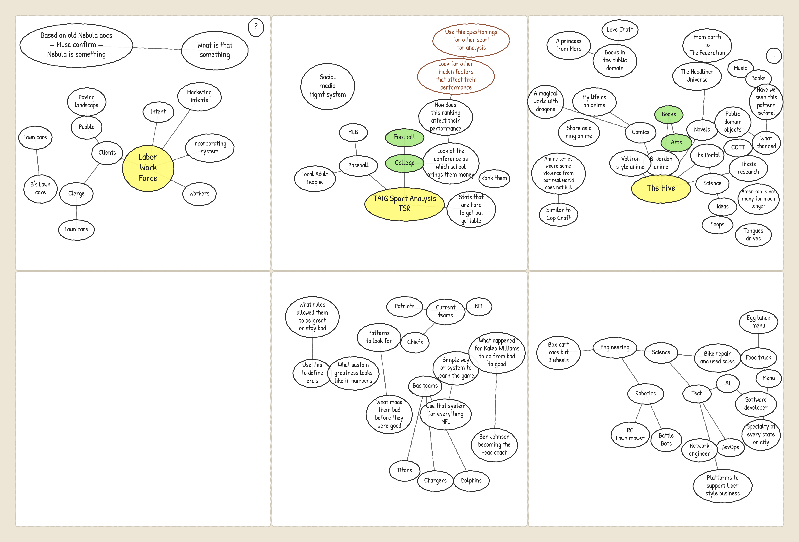
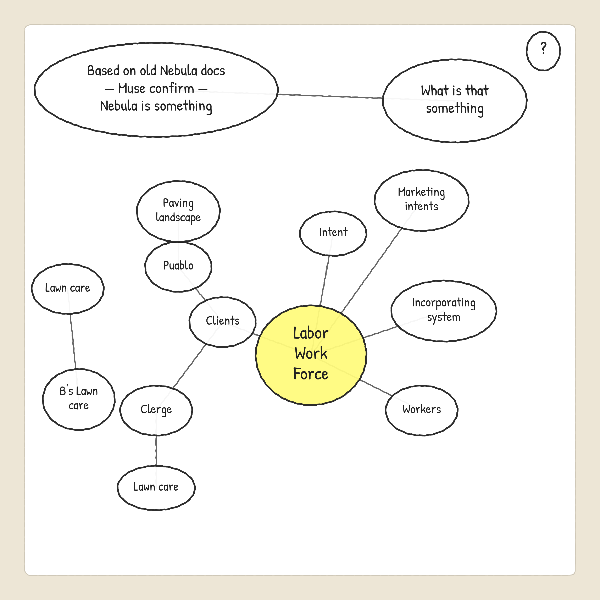
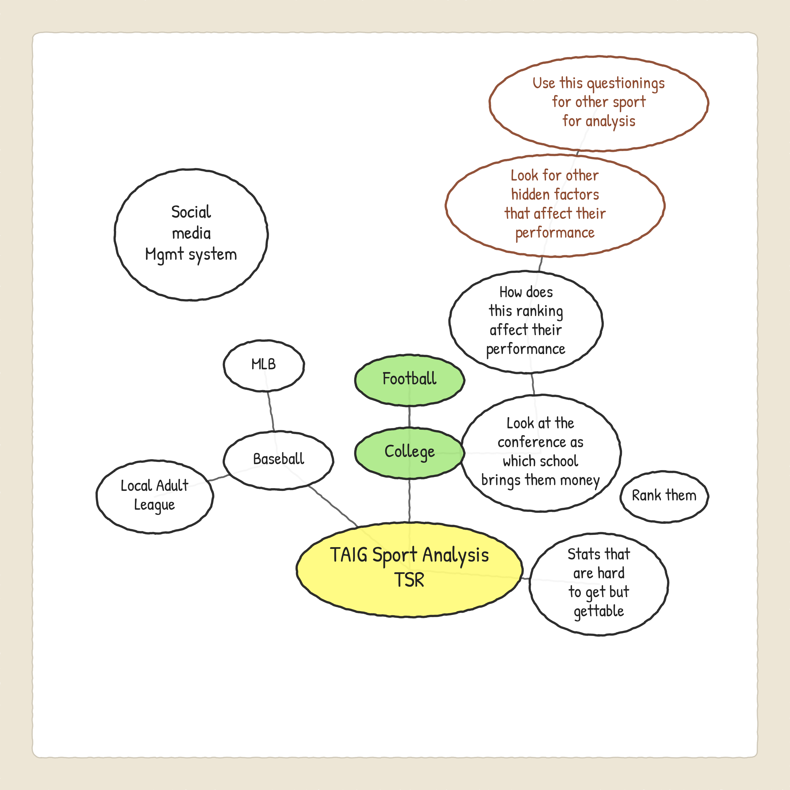
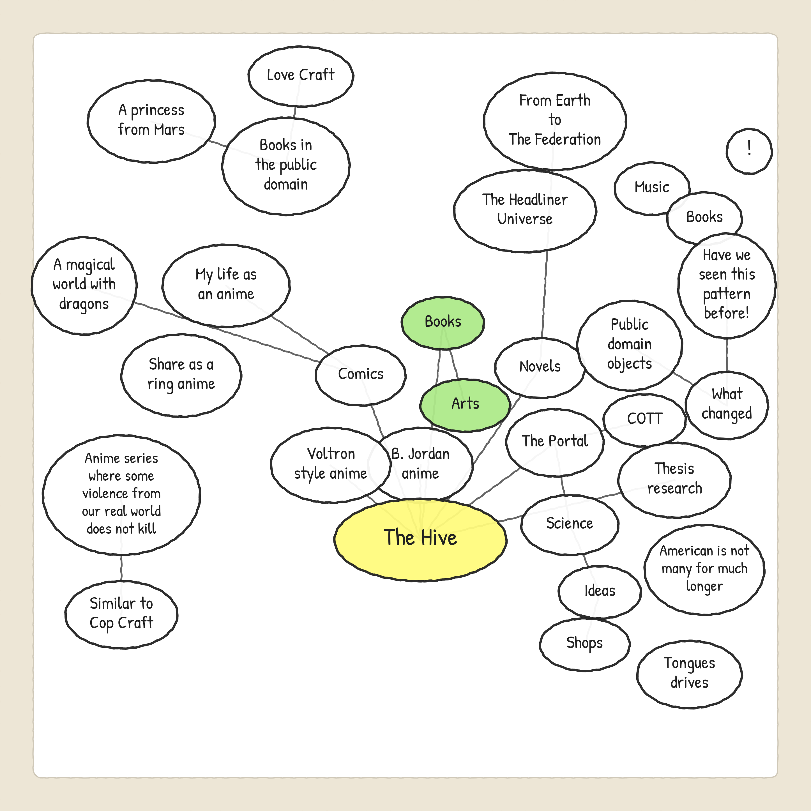
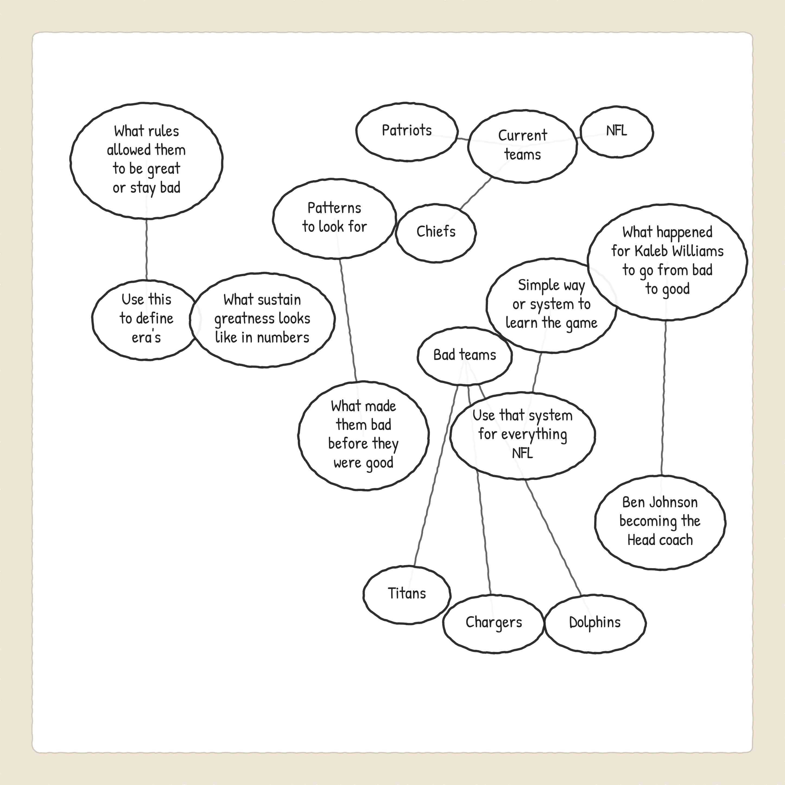
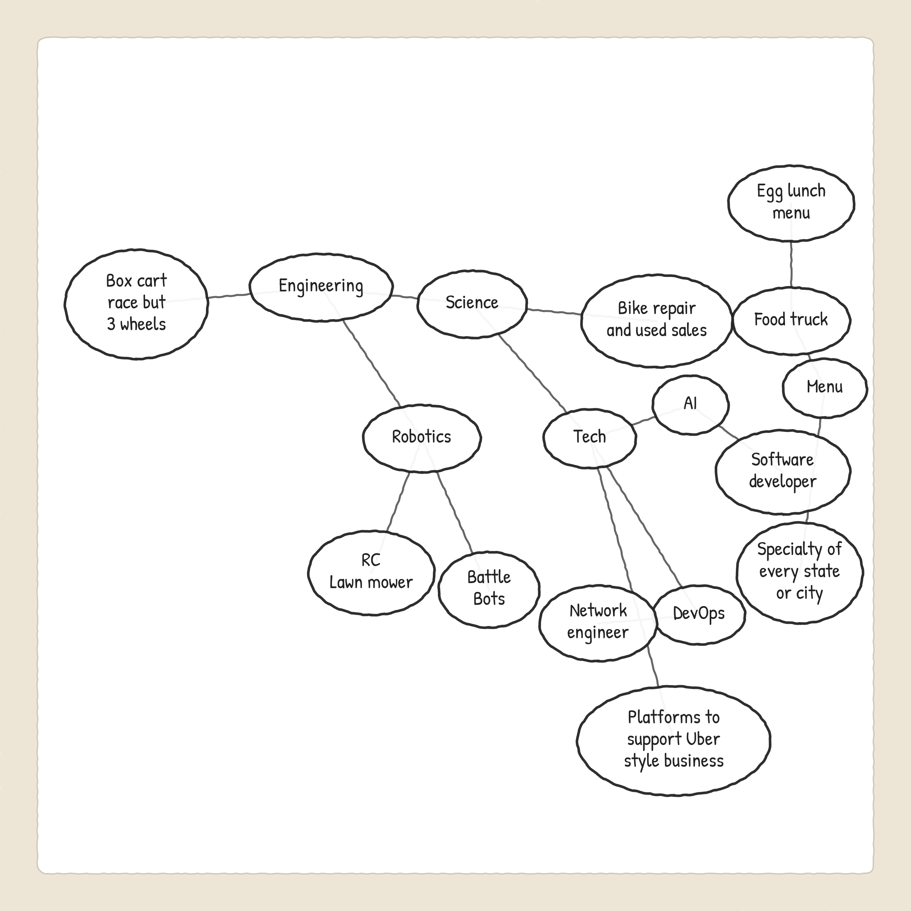

Full board — all six sheets
Pinch or scroll to zoom · drag to move · double-tap to zoom in and out

Loading the board…
1 · Top-left — Nebula question + Labor Work Force
The Nebula question up top, Labor Work Force in yellow below — Puablo, Clerge, clients, workers, intent.

Loading…
2 · Top-middle — Social media + TSR
Social media Mgmt system on its own, then TSR — football, college, the conference-money question, baseball.

Loading…
3 · Top-right — The Hive
Books, comics, anime, the Portal, COTT, public-domain stories.

Loading…
4 · Bottom-middle — NFL sustain-greatness machine
What made teams great or kept them bad, sustain greatness in numbers, the bad teams at the bottom.

Loading…
5 · Bottom-right — Engineering to shops
Engineering → science → tech → AI → software, robotics, the food truck, bike repair, the Uber-style platform.

Loading…